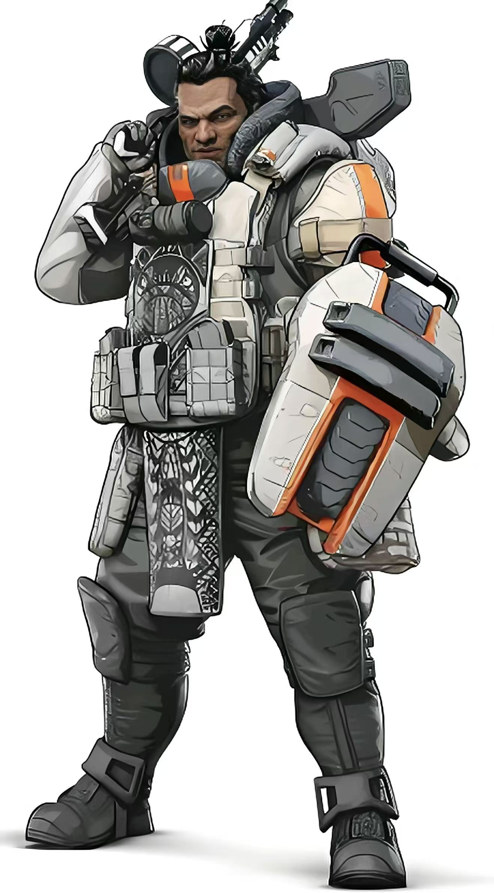
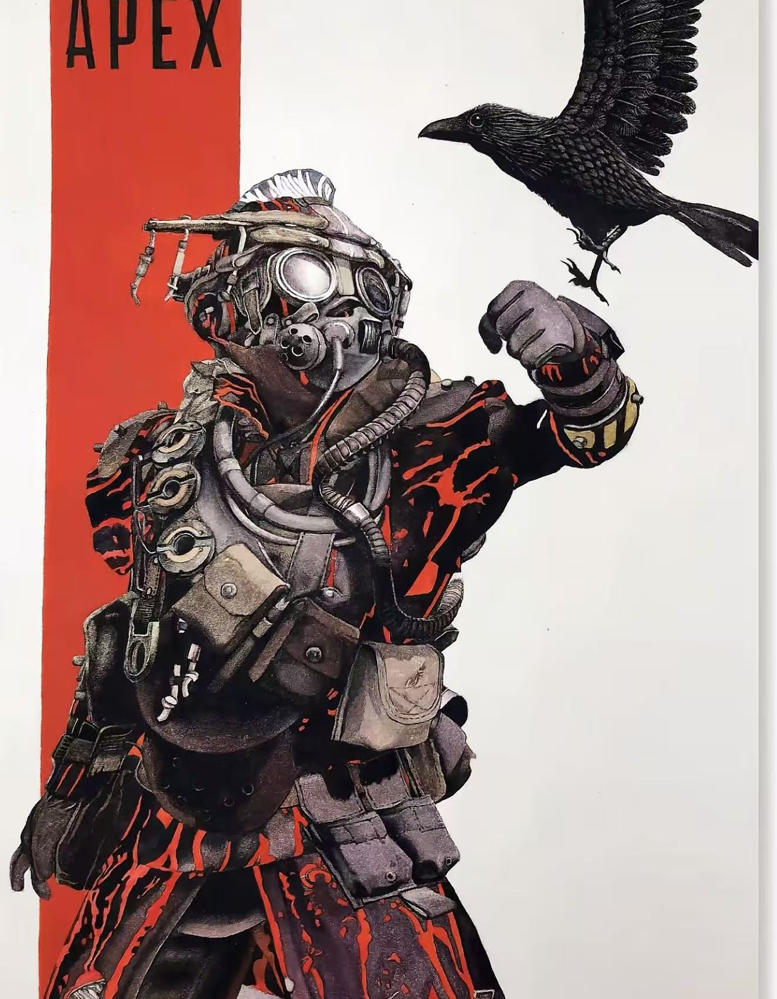

APEX英雄介绍
网站导航
游戏介绍 |
英雄介绍 |
游戏技巧
英雄介绍
1. 直布罗陀（防御型）

直布罗陀是一个防御型英雄，他的技能可以保护队友。
技能介绍：
- 被动技能：枪盾 - 瞄准时展开防护盾
- 战术技能：保护圆顶 - 生成一个防护罩
- 终极技能：防御性轰炸 - 呼叫空中轰炸
2. 命脉（辅助型）
命脉是一个辅助型英雄，她可以治疗队友。
技能介绍：
- 被动技能：战斗医疗兵 - 治疗速度更快
- 战术技能：D.O.C.治疗无人机 - 召唤治疗无人机
- 终极技能：照护舱 - 呼叫装备空投
3. 寻血猎犬（侦察型）

寻血猎犬是一个侦察型英雄，他可以追踪敌人。
技能介绍：
- 被动技能：追踪器 - 看到敌人踪迹
- 战术技能：上帝之眼 - 扫描前方区域
- 终极技能：野兽之怒 - 变身猎人模式
英雄对比表
| 英雄名称 |
类型 |
难度 |
适合新手 |
| 直布罗陀 |
防御型 |
中等 |
是 |
| 命脉 |
辅助型 |
简单 |
是 |
| 寻血猎犬 |
侦察型 |
中等 |
是 |
©APEX英雄介绍网站
TOM 清仁SJNA 2026 1 27